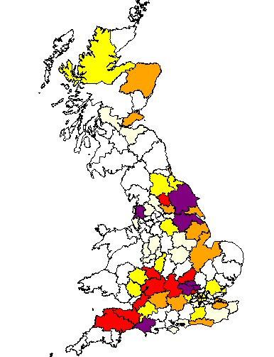

The Fowlers originate from the South West of England and can be traced back to Whitchurch Canonicorum, Dorset — the birthplace of James Fowler in 1771. James, a flax dresser, married Mary Legge of Symondsbury in 1799.
Ben Fowler, their grandson, became a foundry fireman at Edward Whightman's Foundry in Chard and married Hannah Lickey in 1826. His son James moved the family from Somerset to Nottingham, settling in Sneinton.
James (jnr) married Eliza Peck in October 1891. Their children included Bert Fowler, killed in the First World War, and May Fowler, who later married Bill Drury.